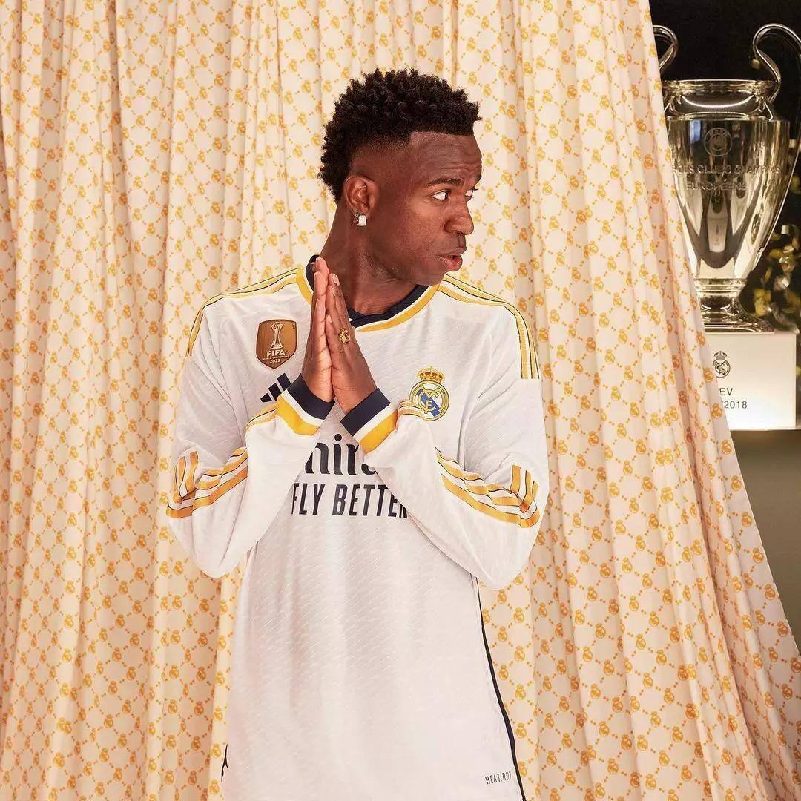

A camisa branca do Real Madrid é um dos maiores símbolos do futebol mundial. Conhecida por sua elegância e tradição, ela representa um clube histórico que construiu uma das trajetórias mais vitoriosas do esporte. O Real Madrid é recordista de títulos da Champions League e revelou alguns dos maiores jogadores da história do futebol. A camisa merengue simboliza excelência, tradição e grandeza dentro e fora de campo.